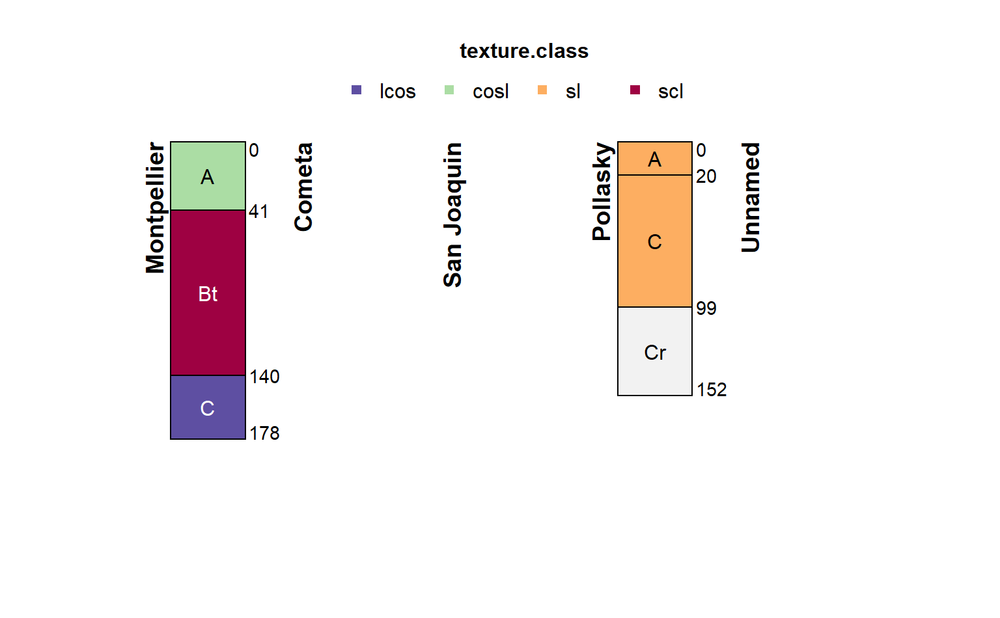

Query Soil Data Access by spatial intersection with supplied geometry
Source:R/SDA-spatial.R
SDA_spatialQuery.RdQuery SDA (SSURGO / STATSGO) records via spatial intersection with supplied
geometries. Input can be SpatialPoints, SpatialLines, or SpatialPolygons
objects with a valid CRS. Map unit keys, overlapping polygons, or the
spatial intersection of geom + SSURGO / STATSGO polygons can be
returned. See details.
SDA_spatialQuery(
geom,
what = "mukey",
geomIntersection = FALSE,
db = c("SSURGO", "STATSGO", "SAPOLYGON"),
query_string = FALSE
)Arguments
- geom
a Spatial* object, with valid CRS. May contain multiple features.
- what
a character vector specifying what to return.
'mukey':data.framewith intersecting map unit keys and names,'mupolygon'overlapping or intersecting map unit polygons from selected database,'areasymbol':data.framewith intersecting soil survey areas,'sapolygon': overlapping or intersecting soil survey area polygons (SSURGO only)- geomIntersection
logical;
FALSE: overlapping map unit polygons returned,TRUE: intersection ofgeom+ map unit polygons is returned.- db
a character vector identifying the Soil Geographic Databases ('SSURGO' or 'STATSGO') to query. Option STATSGO currently works only in combination with
what = "mupolygon".- query_string
Default:
FALSE; ifTRUEreturn a character string containing query that would be sent to SDA viaSDA_query
Value
A data.frame if what = 'mukey', otherwise
SpatialPolygonsDataFrame object.
Details
Queries for map unit keys are always more efficient vs. queries for
overlapping or intersecting (i.e. least efficient) features. geom is
converted to GCS / WGS84 as needed. Map unit keys are always returned when
using what = "mupolygon".
SSURGO (detailed soil survey, typically 1:24,000 scale) and STATSGO (generalized soil survey, 1:250,000 scale) data are stored together within SDA. This means that queries that don't specify an area symbol may result in a mixture of SSURGO and STATSGO records. See the examples below and the SDA Tutorial for details.
Note
Row-order is not preserved across features in geom and returned
object. Use sp::over() or similar functionality to extract from
results. Polygon area in acres is computed server-side when what =
'geom' and geomIntersection = TRUE.
See also
Examples
# \donttest{
if(requireNamespace("curl") &
curl::has_internet() &
requireNamespace("sp") &
requireNamespace("scales") &
requireNamespace("raster")
) {
library(aqp)
library(sp)
library(raster)
## query at a point
# example point
p <- SpatialPoints(cbind(x = -119.72330, y = 36.92204),
proj4string = CRS('+proj=longlat +datum=WGS84'))
# query map unit records at this point
res <- SDA_spatialQuery(p, what = 'mukey')
# convert results into an SQL "IN" statement
# useful when there are multiple intersecting records
mu.is <- format_SQL_in_statement(res$mukey)
# composite SQL WHERE clause
sql <- sprintf("mukey IN %s", mu.is)
# get commonly used map unit / component / chorizon records
# as a SoilProfileCollection object
# confusing but essential: request that results contain `mukey`
# with `duplicates = TRUE`
x <- fetchSDA(sql, duplicates = TRUE)
# safely set texture class factor levels
# by making a copy of this column
# this will save in lieu of textures in the original
# `texture` column
horizons(x)$texture.class <- factor(x$texture, levels = SoilTextureLevels())
# graphical depiction of the result
plotSPC(x, color='texture.class', label='compname',
name='hzname', cex.names = 1, width=0.25,
plot.depth.axis=FALSE, hz.depths=TRUE,
name.style='center-center'
)
## query mukey + geometry that intersect with a bounding box
# define a bounding box: xmin, xmax, ymin, ymax
#
# +-------------------(ymax, xmax)
# | |
# | |
# (ymin, xmin) ----------------+
b <- c(-119.747629, -119.67935, 36.912019, 36.944987)
# convert bounding box to WKT
bbox.sp <-as(extent(b), 'SpatialPolygons')
proj4string(bbox.sp) <- '+proj=longlat +datum=WGS84'
# results contain associated map unit keys (mukey)
# return SSURGO polygons, after intersection with provided BBOX
ssurgo.geom <- SDA_spatialQuery(
bbox.sp,
what = 'geom',
db = 'SSURGO',
geomIntersection = TRUE
)
# return STATSGO polygons, after intersection with provided BBOX
statsgo.geom <- SDA_spatialQuery(
bbox.sp,
what = 'geom',
db = 'STATSGO',
geomIntersection = TRUE
)
# inspect results
par(mar = c(0,0,3,1))
plot(ssurgo.geom, border = 'royalblue')
plot(statsgo.geom, lwd = 2, border = 'firebrick', add = TRUE)
plot(bbox.sp, lwd = 3, add = TRUE)
legend(
x = 'topright',
legend = c('BBOX', 'STATSGO', 'SSURGO'),
lwd = c(3, 2, 1),
col = c('black', 'firebrick', 'royalblue'),
)
# quick reminder that STATSGO map units often contain many components
# format an SQL IN statement using the first STATSGO mukey
mu.is <- format_SQL_in_statement(statsgo.geom$mukey[1])
# composite SQL WHERE clause
sql <- sprintf("mukey IN %s", mu.is)
# get commonly used map unit / component / chorizon records
# as a SoilProfileCollection object
x <- fetchSDA(sql)
# tighter figure margins
par(mar = c(0,0,3,1))
# organize component sketches by national map unit symbol
# color horizons via awc
# adjust legend title
# add alternate label (vertical text) containing component percent
# move horizon names into the profile sketches
# make profiles wider
groupedProfilePlot(
x,
groups = 'nationalmusym',
label = 'compname',
color = 'awc_r',
col.label = 'Available Water Holding Capacity (cm / cm)',
alt.label = 'comppct_r',
name.style = 'center-center',
width = 0.3
)
mtext(
'STATSGO (1:250,000) map units contain a lot of components!',
side = 1,
adj = 0,
line = -1.5,
at = 0.25,
font = 4
)
}
#>
#> Attaching package: 'raster'
#> The following objects are masked from 'package:aqp':
#>
#> metadata, metadata<-
#> single result set, returning a data.frame
#> single result set, returning a data.frame
#> single result set, returning a data.frame
#> single result set, returning a data.frame
#> single result set, returning a data.frame
#> single result set, returning a data.frame
#> empty result set
#> single result set, returning a data.frame
#> converting profile IDs from integer to character
#> Warning: Horizon top depths contain NA! Check depth logic with aqp::checkHzDepthLogic()
#> Warning: Horizon bottom depths contain NA! Check depth logic with aqp::checkHzDepthLogic()
#> Warning: horizon ID name (chkey) not unique. unique ID not changed.
#> converting what='geom' to what='mupolygon'
#> converting what='geom' to what='mupolygon'

#> Warning: duplicates is set to FALSE and 'mukey' is in WHERE clause. Note: 'mukey' omitted from result.
#> single result set, returning a data.frame
#> single result set, returning a data.frame
#> single result set, returning a data.frame
#> empty result set
#> single result set, returning a data.frame
#> single result set, returning a data.frame
#> empty result set
#> single result set, returning a data.frame
#> converting profile IDs from integer to character
#> converting horizon IDs in column `chkey` to character

 # }
# }